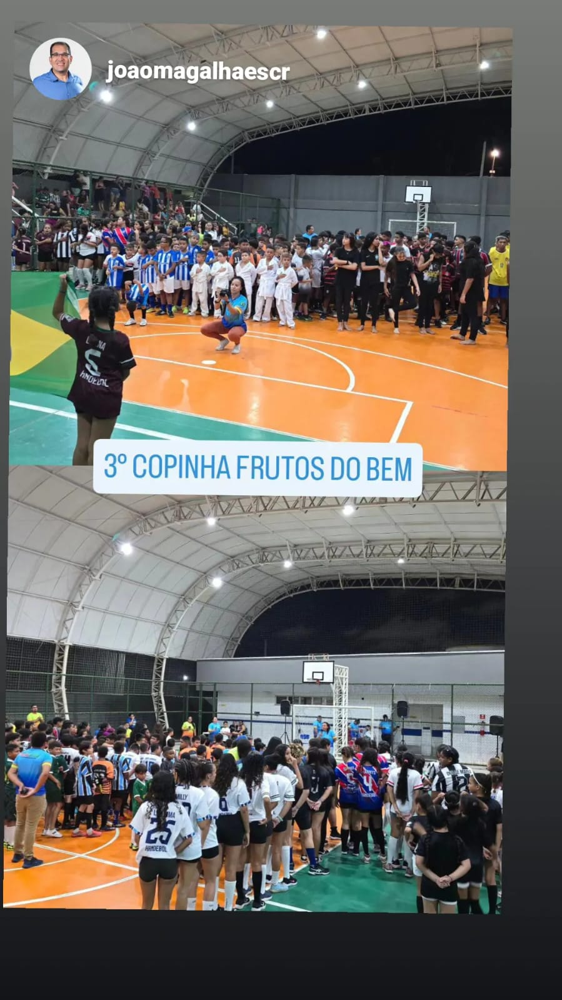

Fundador
Carlos Edson “Papito”
Criado no Serviluz, Papito encontrou no esporte um caminho de crescimento pessoal e social. Inspirado pelas oportunidades que recebeu, fundou o Instituto Frutos do Bem para multiplicar esperança, fé e novas possibilidades às famílias da comunidade.